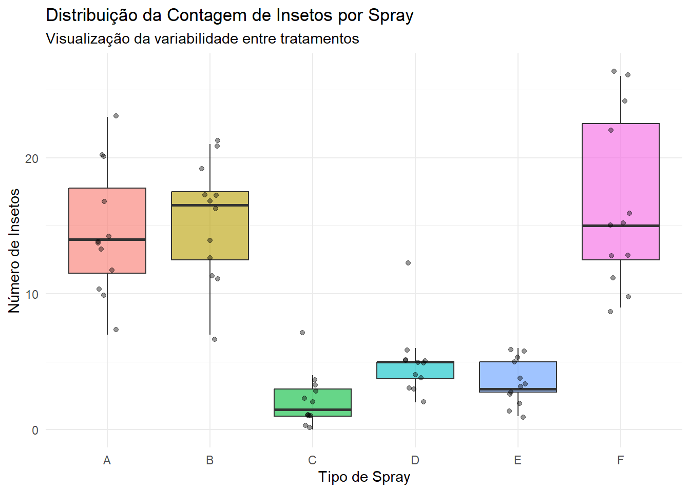
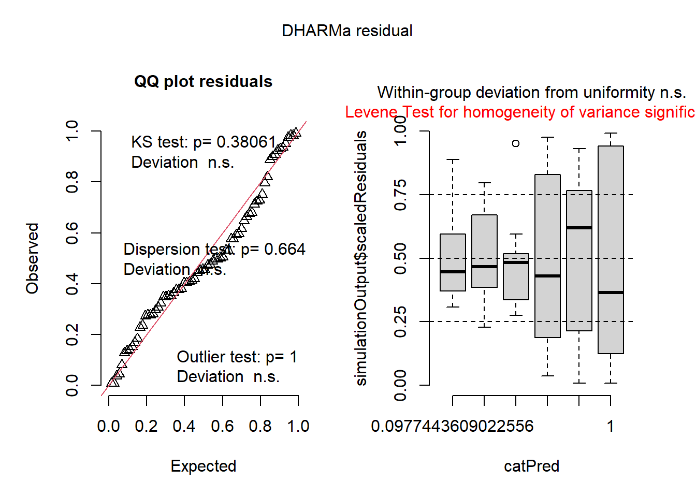
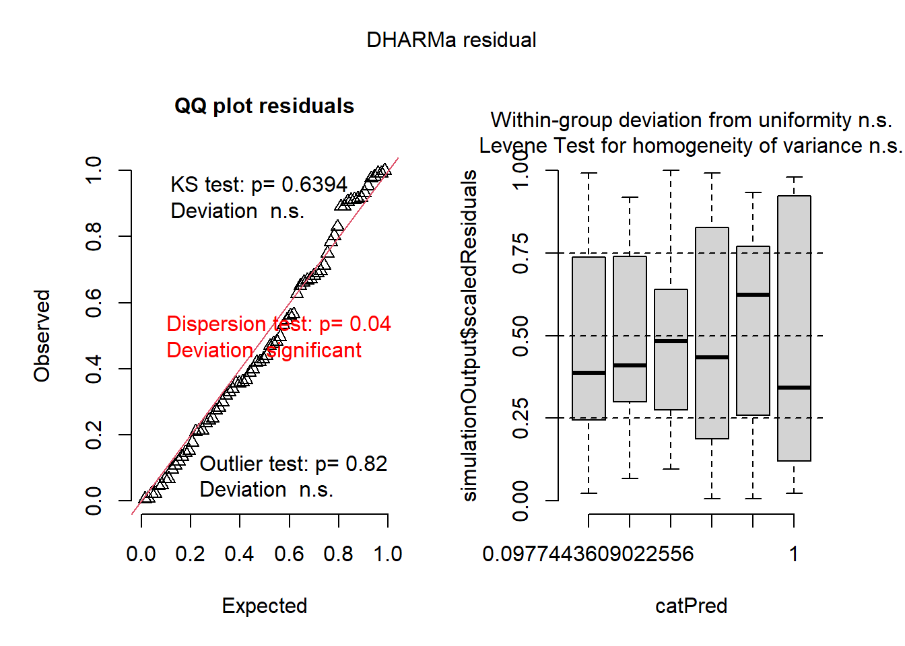

O conjunto de dados InsectSprays contém contagens de insetos em unidades experimentais tratadas com seis tipos de inseticidas (sprays). Por se tratar de dados de contagem (números inteiros e positivos), a análise deve considerar que a variância frequentemente aumenta com a média.
Code
# Carregamento de bibliotecas necessáriaslibrary(tidyverse) # Manipulação e visualizaçãolibrary(performance) # Verificação de pressupostoslibrary(DHARMa) # Diagnóstico de resíduos de GLMslibrary(emmeans) # Médias estimadas e comparaçõeslibrary(multcomp) # Testes de comparação múltiplalibrary(multcompView) # Suporte para letras de significâncialibrary(agricolae) # Testes agronômicos e Kruskal-Wallis# Carregando os dadosinsetos <- InsectSprays
Code
insetos |>ggplot(aes(x = spray, y = count, fill = spray)) +geom_boxplot(outlier.colour =NA, alpha =0.6) +geom_jitter(width =0.1, alpha =0.4) +theme_minimal() +labs(title ="Distribuição da Contagem de Insetos por Spray",subtitle ="Visualização da variabilidade entre tratamentos",x ="Tipo de Spray",y ="Número de Insetos") +theme(legend.position ="none")

Code
# Ajuste do modelo linearm1 <-lm(count ~ spray, data = insetos)# Resumo do modelo e Tabela ANOVAanova(m1)
Analysis of Variance Table
Response: count
Df Sum Sq Mean Sq F value Pr(>F)
spray 5 2668.8 533.77 34.702 < 2.2e-16 ***
Residuals 66 1015.2 15.38
---
Signif. codes: 0 '***' 0.001 '**' 0.01 '*' 0.05 '.' 0.1 ' ' 1
Code
# Verificação de Pressupostos# Teste de Shapiro-Wilk para normalidade e Bartlett para variânciacheck_normality(m1)
Warning: Non-normality of residuals detected (p = 0.022).
# Diagnóstico visual via DHARMa# Pontos fora das faixas indicam problemas no modelo linear simplesplot(simulateResiduals(m1))

Code
kruskal.test(count ~ spray, data = insetos)
Kruskal-Wallis rank sum test
data: count by spray
Kruskal-Wallis chi-squared = 54.691, df = 5, p-value = 1.511e-10
Code
# Comparação de grupos (Post-hoc)k_test <-kruskal(insetos$count, insetos$spray, group =TRUE)print(k_test$groups)
insetos$count groups
F 55.62500 a
B 54.83333 a
A 52.16667 a
D 25.58333 b
E 19.33333 bc
C 11.45833 c
Code
# Novo modelo com a resposta transformadam2 <-lm(sqrt(count) ~ spray, data = insetos)# Verificando se a transformação corrigiu a variânciacheck_heteroscedasticity(m2)
OK: Error variance appears to be homoscedastic (p = 0.854).
Code
# Ajuste do modelo GLMm3 <-glm(count ~ spray, family =poisson(link ="log"), data = insetos)# Diagnóstico de resíduos para GLM# Verifica se há sub ou superdispersão (Overdispersion)plot(simulateResiduals(m3))

Code
# Comparação de médias e Letras de Significância (Teste de Tukey)# 'type = response' converte os valores da escala log para a escala real (contagem)medias_glm <-emmeans(m3, ~ spray, type ="response")df_final <-cld(medias_glm, Letters = LETTERS, reversed =TRUE) |>mutate(.group =trimws(.group)) # Remove espaços extrasprint(df_final)
spray rate SE df asymp.LCL asymp.UCL .group
3 F 16.666667 1.1785113 Inf 14.509743 19.144225 A
5 B 15.333333 1.1303883 Inf 13.270435 17.716910 A
4 A 14.500000 1.0992422 Inf 12.497944 16.822767 A
1 D 4.916667 0.6400955 Inf 3.809375 6.345820 B
2 E 3.500000 0.5400617 Inf 2.586573 4.735996 BC
6 C 2.083333 0.4166664 Inf 1.407727 3.083181 C
Code
df_final |>ggplot(aes(x =reorder(spray, -rate), y = rate, label = .group)) +geom_errorbar(aes(ymin = asymp.LCL, ymax = asymp.UCL), width =0.1, color ="gray30") +geom_point(size =4, color ="steelblue") +geom_text(aes(y = asymp.UCL), vjust =-1, size =5) +scale_y_continuous(limits =c(0, 25)) +coord_flip() +theme_classic() +labs(title ="Eficácia dos Inseticidas",subtitle ="Médias estimadas por GLM Poisson com Intervalos de Confiança (95%)",x ="Spray Aplicado",y ="Média de Insetos Vivos",caption ="Letras iguais indicam que não há diferença significativa (Tukey, p > 0.05)" )